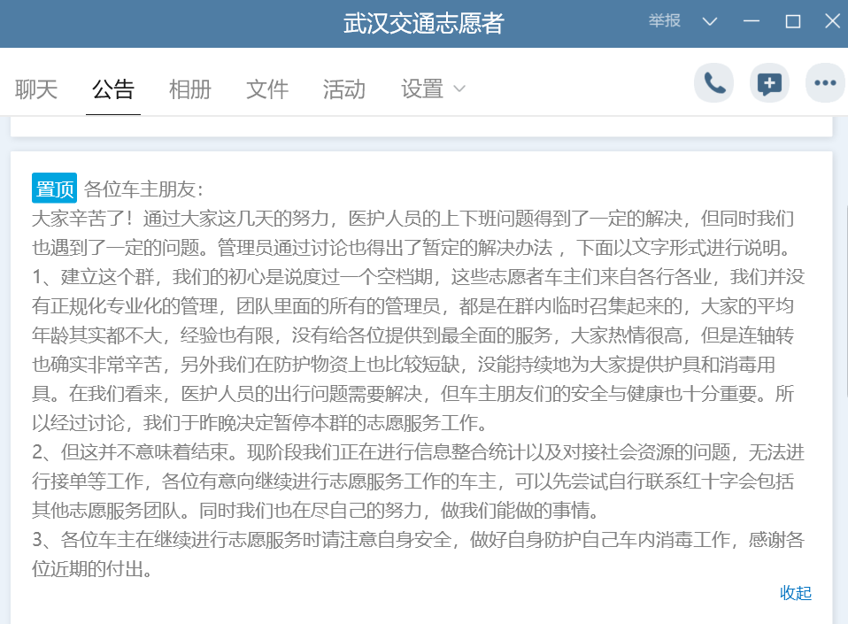
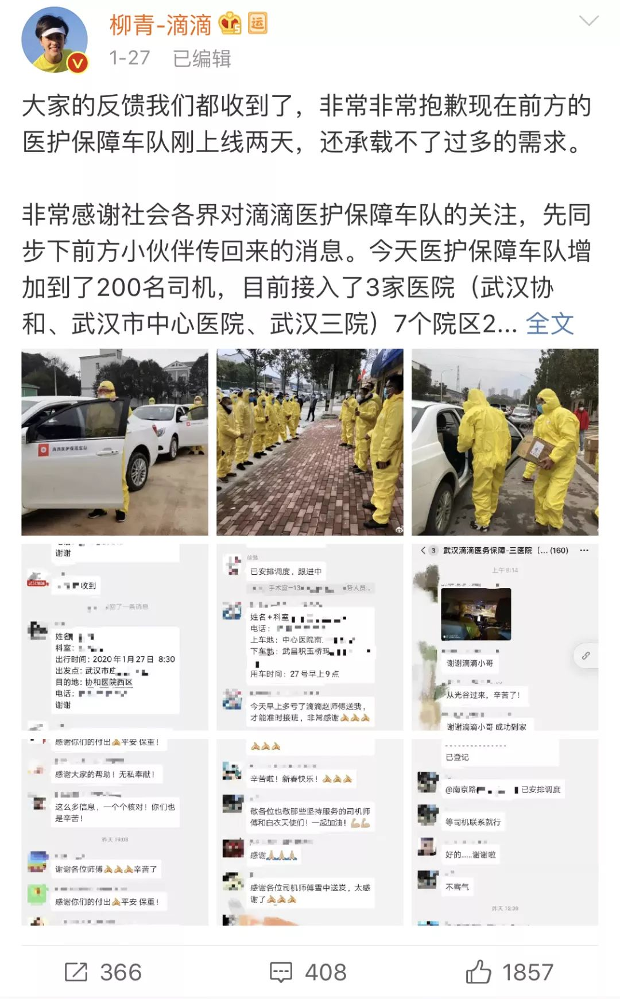

封城下的“出行难题”和急需去医院的人们
原文链接 备份链接 封城，已经过去了一周。市内交通停运、机动车中心城区限行，让这座现代城市里习惯了汽车、地铁出行的人们突然之间陷入寸步难行的境地。 文 | 陈星萌、薛雨霏、谢婵、高逸佳 编辑 | 小豆 自1月23日10时武汉封城，到今天 …

关注并星标消费新声
不错过泛消费任何最新动态

过去几天里，我目睹了这些武汉人用近乎燃烧自我的方式集结到一起，也和他们一起对抗着朝令夕改的动荡与外部支撑的缺失，而囿于有限的个人力量，我们最终不得不选择向现实妥协。
作者 | 黎佳瑜
编辑 | 罗立璇
没有谁会比武汉人更想拯救这座城市。
离汉通道被关闭以后，他们迅速地行动了起来，用个人的视角与力量，去讲述武汉的遭遇，去试着拯救这座身陷囹圄的孤城。
爱心车主是最早被媒体关注的群体之一。他们的出现，原本是为了解决仓促“封城”以后医护人员出行困难的问题，在配套方案出台以前，熬过这个窗口期。如果不是他们，许多奋战在一线的医护人员，要么回不了家，要么只能依靠步行或共享单车。
我加入医护出行互助群时，原本只是想要寻找采访对象。但作为一个远离一线的普通人，我又很想为这些善良的人们做点什么。于是我真正地成为了一名志愿者，和大家一起用笨方法搭起一座松松垮垮的“桥梁”，让医护人员得以通过一种临时的方式赴往前线。
那时的武汉有许多这样的医护出行互助组织，他们的善意值得钦佩，但不应该被消耗。过去几天里，我目睹了这些武汉人用近乎燃烧自我的方式集结到一起，也和他们一起对抗着朝令夕改的动荡与外部支撑的缺失，而囿于有限的个人力量，我们最终不得不选择向现实妥协。
我记录并不是为了歌颂，因为在很多时候，英雄本不必成为英雄。

搭桥
比起显然不够即时的疫情通报，武汉的“封城”迅速得让人心惊。
武汉市长周先旺在接受采访时表示，在一些强硬措施上，武汉市“很果断”。但他没有提及，迫于疫情的仓促“封城”，一度让这座千万级人口的城市陷入很多意想不到的麻烦。
市内公共交通停运，医院从床位、人手到物资全线匮乏，口罩和酒精等防护用品千金难求，连肉类蔬菜这些维系日常生活的物品供给都出现了困难。尽管包括阿里、美团和滴滴在内的商业力量迅速宣布介入，但还是不能填补政府配套措施的失位。
医护人员的出行问题是第一个爆发的矛盾。这些站在全国抗疫战场最前线的医护人员，有许多人平时依靠公共交通上班，当天只能骑共享单车或步行抵达医院。这种匪夷所思的极端情况激怒了许多人，也成了武汉人自救的助燃剂。
不少人开始在微博等平台上发起组建爱心车队的倡议，Reaka便是其中之一。她本就是一名医生，由于不在一线科室，这几天一直在家等安排。23日凌晨，看到关闭离汉通道消息发布以后，她焦虑得睡不着觉，“如果医护人员不能到岗，或者不能准时，那病人谁治？”

▲微博上的医护人员出行互助群二维码
于是，Reaka也建立了一个用于医护出行互助的QQ群。她只在朋友圈和几个群里发了二维码，没想到加群的人越来越多。她想，应该是有不少人自发帮忙做宣传，“这也侧面说明需求真的很大。”
我是在除夕那天加入这个医护出行互助群的。起初，我只是想通过这些QQ群和微信群接触和采访一些武汉市民。但当Reaka一遍又一遍地刷消息征集志愿者的时候，我忍不住想，有什么事情是不在一线的自己也能做到的。
跟Reaka简单交流后，我成为了群管理员，被拉进了群里。当时在群里的8位管理员，都是Reaka临时在群里找的。我们要做的事情，就是在医护和车主（当然，也有像我这样的“无关人员”）不断涌入时，反复提醒他们修改备注，教他们如何发布出行需求和“接单”。
那是一个颇为兵荒马乱的开场。加群申请不断出现，Reaka不得不临时充值了QQ年度会员，将QQ群的成员上限升至2000人。
首先需要面对的是真实性的问题。面对响个不停的加群申请，我们来不及、也没有能力对他们做身份和资质审核，只能在群里发公告提醒车主和医护在对接时提前互相出示身份证明。现在看来，这的确存在一定的风险——在这样的特殊时期，但凡有一点恶意掺杂其中，都可能伤害这些奔波在一线的人们。
一开始，我们用在线文档统计出行需求，但这种留言板一般的原始做法效率太低。后来，我们一度改用在线Excel表格，让医护和车主自行填写出行需求或空闲时段，但这似乎也不是个好办法。
对话框里依旧乱哄哄的，人数还在不断增加，改用新方法后不久，又有人提出要分开管理车主和医护，由管理员统一收发消息。
为此，大家还吵了一架。一部分人觉得，让他们自行匹配的效率太低，另一部分人则认为，分开管理势必增加现有的工作量。
一种莫名的紧张感紧咬在身后。我们都担心会因为方法的反复修改而耽误医护人员的出行，最后以投票的方式决定，将车主和医护引流到两个QQ群里，由管理员充当信息中转站。
角角便是在这个时候因为踊跃发言而逐渐担当起“指挥者”的角色。这个武汉姑娘在北京上大学，最近最担心的事情就是学校延期开学，自己还能不能按时毕业。在她的指挥下，几个人分工开始建群引流和对接信息。
那天是除夕，我没能一直在线。下午五点，吃完年夜饭的我再次上线，惊讶地发现一套完整的流程已经开始跑了起来。
2000人的医护群已经满员，另外新建了500人的车主群。医护将出行需求私聊发给一位管理员，管理员整理、编号再转发到车主群。每隔一段时间，有人负责将遗留在聊天记录里的单子按照地区和时间整理成表格，再上传至QQ群。
我上线时，群里最新的单子编号是132，也就是说，我们已经至少帮132位医护人员传递了出行需求。除了收发信息，管理员们还要定时提醒车主们注意安全，做好戴口罩、勤消毒等防护措施。
短短一个下午，这些因共同的目标而走到一起的陌生人，已经组成了一支井然有序的出行服务队伍，跑出了一套可以流水线、系统化操作的运作模式。大家一起用笨方法搭起了人工的“医护出行平台”。
当然，不是每个单子都会有车主认领，也有人等了半天，最后决定自己骑共享单车上下班。但你绝不会因此而责备车主们，无论有多少人在同时行动，个人的力量始终是有限的。他们拼尽全力，也只能搭起一座座松松垮垮的“桥梁”。
但在那个时刻，武汉人需要这些桥梁。身处风暴中心的他们，“想做点什么”的心情只会比我这样的“局外人”更加强烈。他们也需要从彼此身上获得更大的勇气，去对这场抗席卷武汉的风暴，去证明这座城市还没有被放弃。
站在“桥梁”中间的我，第一次离开媒体和社交网络的转述，直面来自疫区一线人员的情绪。那天晚上，忙碌的间隙，陆续有医护人员发消息说，联系到司机了，谢谢你们，祝新年快乐。一位医护人员反复和我说谢谢，她说自己现在最担心的不是不能下班，而是不能按时上班。
这样的鲜活情绪还有很多，它们藏在数量庞大的出行需求里，像大年夜馈赠给我们的小彩蛋。
同一时刻，我所在的粤北小镇维持着一片平静。零点一过，外面响起了迎春接福的鞭炮声，而另一边，QQ提示音还在接连不断地响起，我和管理员们开始分工做收尾工作，一些人处理新的单子，一些人整理归档未被认领的旧单。
我曾一度迷失在远处的呼救与近处的笑声中。但当我从旁观者变成了参与者，在职业诉求以外，以一个普通人的身份找到了自己能做到的事情，我似乎稍微地能理解这些车主与志愿者们选择奔走的执念。
那天夜里，武汉市发布了《武汉市新型肺炎防控指挥部通告（第8号)》（下称“8号令”），要在全市紧急征集6000台出租车，满足居民的出行需求。有人把这个消息转到了群里，我们都觉得，这是一个很好的开端，至少说明“封城”后的配套已经开始建立。
“新年快乐！希望明天是个好日子。”零点的到来让除夕终于有了些许存在感，管理员苍穹说完，大家开始互道新年快乐。
所有人都在想，明天会是一个新的开始。

众志
然而，突如其来的变故差点改写了出行互助群的命运。
1月25日下午，武汉市发布《武汉市新型肺炎防控指挥部通告（第9号）》（下称“9号令”）称，为了控制流动人员引发的传染风险，从26日0时起，除了经许可的车辆，中心城区区域实行机动车管制。
这意味着，零点以后，私家车辆未经许可不得在城区行驶。因而，这些爱心车主们的出行服务就要被强行中止，大批医护出行互助群将迎来被解散的命运。

这让我们都有些措手不及。当时，医护人员的二群刚刚建立，他们的出行需求源源不断地涌入聊天框，途径流畅运转的互助体系，被送到车主的手中。车主群里也有许多人在问，真的不能跑了吗？明天已经约满了，这下要怎么办？
更大的问题在于，除了此前8号令提及的6000台出租车，武汉并没有其余出行配套的更新，而平均下来每个社区3到5台出租车的配给量也远远不够。
“武汉人都在想办法自救，政府怎么这个样子？”许多人意识到了问题所在，群里开始有车主发泄自己的愤怒。
负责车主群的管理员安慰车主时，连自己都有些不确定：“应该会有措施，不然这也太坑了。”
“今天可能是最后一天了，冲！”同一时刻，角角在管理员的讨论组里说。苍穹回复道：“那就核实一下，能功成身退就最好了。”
其实从一开始，我们就知道，这种爱心接力的方式远不能真正地解决医护人员的出行。这只是在非常时期，尽可能地为他们撑起一个过渡期罢了。而在连轴转的第二天，包括我在内的几个管理员已开始有些疲惫，也在反思互助群的人身安全、健康防疫等潜在风险。
经过短暂讨论，角角编辑了新的公告，恳请大家“站好最后一班岗”。她在公告里写道：“大家从今晚零时起在家休息，做到尽量不出门不添乱，这是为我们的城市出一份力。相信明日就会有便于一线人员出行的配套设施。”
尽管武汉政府在过去几天里表现出了相当迟滞的应急能力，9号令也一度给大家带来挫败感，但这些冲在“自救”第一线的武汉人中，仍有许多人相信政府会想办法解决后续的问题。不过在那时候，对于我们这些能力有限的普通人来说，除了相信，或许没有第二个选项了。
当来自各界的正向信号帮助武汉人重建信心，我们也看到了一些转机。复制“小汤山”模式的火神山、雷神山医院开始建设，各大媒体也滚动播报着来自商业公司的物资与资金援助，以及数百名军医、多支医疗救援队赶往武汉的消息。
在无奈与希望的交织中，“站好最后一班岗”成了所有人眼前最具象的目标。
发布新公告后，管理员们做了几手准备。大部队继续留守在三个群里，收集与分发医护出行需求，向他们强调出行时间要截至9号令生效的0点前。为了求证8号令中的社区出行服务是否覆盖医护人员，我们给武汉市交管局打了一个下午的电话，还跑到微博给“武汉交警”发私信，但都没有得到回复。
考虑到一些免费的餐饮和住宿援助可以变相解决医护的出行需求，我们一一打电话核实在各个群里广泛流传的相关资源。有来自民间的物资捐助找到互助群里，我们也试着帮对方对接医院、找车主运输。
那天下午，车主群的氛围空前高涨，车主们除了接单，话也多了起来。一位汉阳的车主在大家讨论时说：“大家做好防护，完成自己的事情就好，剩下的我们还是不要给政府添乱。”
一些不认可9号令的车主开始自己寻找应对方法。有人将问题反映到了红十字会，也有人在群里说，他刚刚给明天早上要接的医护人员打电话，答应按预定时间去接她：“我说如果路上被拦，就把你交给警察叔叔，让他们送你回家。”
傍晚，一些消息开始在各个出行互助群里传播。一张截图显示，经过咨询市交管局，医护人员在26日0点后可以行车，但需随身携带并及时出示胸牌。有管理员得到消息说，省指挥部与市指挥部还在沟通行车车辆的界定问题。后来，又有车主在群里说，医院可以为接送医护人员的车辆开具出行证明，还将证明的样本也发到了群里。

让我们感到难办的是，上述种种说法没有一个出现在官方的任何消息渠道里。大家只能通过人际关系网络，找相关机构的工作人员艰难求证。而在有确切消息以前，面对车主的疑问，我们也不知道该如何回答。
当晚七点半，我们终于等来了官方消息：26日0点后，市公安交管部门将对禁止通行的车辆通告车主，对未通告的车辆一律实施放行。这相当于废止了仅发布不到四个小时的“9号令”。
互助群的危机并没有完全结束：官方公告没有提及更具体的界定标准，我们也无从得知什么才是“禁止通行的车辆”。

不过，我们都没来得及细想，因为“晚高峰”开始了——许多医护的出行需求集中在早晚两个时段，他们中有不少人是前往医院上早班，或是通宵值班后等车回家，也有的人只是回家收拾换洗衣物，准备回医院长期“扎营”。
有人哀叹着还得忙，也有人在庆幸还能跑。
夜里十点多，车主老徐还在路上。他在今天接送了八位医生，跑了整整一天，却还有些忐忑，不知道自己的工作量是多还是少。下午在二七长江大桥上堵车的时候，他还发了条朋友圈：“医护人员太难了。”
车主“蓝点”和老徐在群里互相打气。早些时候，蓝点为了接送医护人员跑得汽车没油了，好不容易找到了加油站，顾不上吃饭，又开始在群里接单，“加满了油，开心。”
在那个情绪高涨的夜晚，还在路上奔波的绝不止他们两个。有人把武汉三镇跑了个遍，也有人临近零点了，还在群里吆喝接最后一单就回家睡觉。
Reaka不得不在群里强调：“你们不要这样，请注意身体，不然我们觉得心里很难受，不要累倒了。”

来自医护人员的感谢出现在我们的聊天框里，也以更加具象的方式出现在了车主们的面前——他们中有不少人悄悄地在车上留下了口罩、酒精等防护用品，送给搭载他们的车主，后者像发现糖果的小孩，在群里和其他人“炫耀”了起来。
“互相帮助，太感谢他们了。”一位车主说。
零点钟声响起，而9号令早已被抛诸脑后。能容纳500人的车主群已经满员，还有许多人在等待入群申请的通过。

暂停
高昂的情绪背后，危机悄然席卷而来。
到了第三天，管理员们的疲态更盛。充当信息中转站的我们，需要全天盯着手机屏幕，随时收集与分发消息，还要定期做整理、核实医护与车主提供的其他消息。因为连轴转，我不过是被家里人追着数落几回，而角角忙得只能吃泡面，有管理员还自己开车接单，根本顾不上休息。
我们不想停下来，但不知道自己还能坚持多久。
好在有几个程序员找到角角，提出要给出行互助群做一款小程序，让医护群的运作完全自动化。程序员们行动力很强，只用了两天就做出了雏形，但还要完善和等待平台审核，一时半会帮不上忙。
而作为一个临时集结的松散组织，我们的问题远远不止于此。
尽管车主们在群里仍然十分热情，但我们知道，屏幕背后的他们在这两天经历了从物资到精神的巨大消耗。
他们没有补贴，连续几天奔波在外，都是成百上千地自掏腰包支付油钱。防护用品也都是自己购买，这些物资消耗得很快，而当时的武汉正在经历疫情的快速扩散，连医院都开始因物资短缺而向社会求援，普通人又能有多少办法？
我们也曾参考过一些组织性更强、或是挂靠于专业慈善机构的车队，后者能给车主供应酒精和口罩，要求他们按时消毒，但我们显然不具有这样的能力。一来车主都是以自发的形式接单，分散性太强；二来我们也担心，在没有对车主实行统一管理的情况下，难以在分配时做到绝对公平、毫无纰漏。
我们不敢贸然接受社会捐赠的物资与资金，只能反复强调一定要注意个人防护。但后来，还是有一位车主告诉我们，他出现了发热症状，已回家自行隔离。我们认为自己没能保护好这些奋战在一线的人。
车主的处境比想象中得要更加严峻，并不是所有人都能理解他们的善举。有车主大年夜还在外面忙着接送医护人员，当晚回家就和家人起了争执，还有车主在群里说，他的车钥匙被家里人收走了，没办法继续接单了，怕占用群里的位置决定退群。
遭遇物资短缺、身心疲惫的他们选择离开，原本就是人之常情，没有人会责备他们。但那位车主在退群以前，还是郑重地道了一声“抱歉”。
面对重重矛盾，留下的车主们也开始的审视这座“桥梁”的脆弱和未卜的未来。
前一晚，车主老徐给管理员“左卫门”打了长达一刻钟的电话。“他说我们不是正规军，在消毒安全措施上没办法做到位，万一一个人感染了，就会引起连锁反应。”
“你们今天一定要给出答案。”挂了电话，老徐又给他发消息，“别人拖，我们可拖不得。”
老徐的话刺痛了大家的神经。没有人愿意眼睁睁地看着这些善良的人被暴露在危险之中，也没有人经得起如此看不到尽头的消耗。最终，我们决定从27日0点开始，无限期暂停医护出行互助群的活动。

“我们的初心是度过一个空档期。”在当晚的公告中，角角写道，“大家来自各行各业，团队里的所有管理员都是在群里临时召集起来的。我们没能为大家提供最全面的服务。”
感到茫然的并不只有我们。几天前，一位民间爱心车队的负责人在自述中写道，过去几天里，他所在的车队司机人数从4000迅速滑落到了400：“整个民间爱心车队真的已经到了坚持的极限了。”
暂停互助群后，我们依然想为车主和医护们做点什么，正如角角在公告中所写的那样，“尽力做我们能做的事情。”
为了寻找出路，我们曾试图将互助群挂靠在更专业的慈善机构下，或是由网约车平台吸收。因为机构或平台能够车主提供更专业的防护用具。
在看到滴滴召集100名司机组建“医护保障队”的消息后，Reaka就萌生了寻求平台帮助的念头，辗转通过在线客服、电话客服咨询，以及微博大V的帮助，最终联系到了滴滴，但后者在那时也只能有限地覆盖武汉协和、武汉市中心医院和武汉三院三家医院。
27日，滴滴出行总裁柳青发微博表示，医护保障队的司机增加到了200名，从人工调配改为平台调度，但为更多医护工作者服务确实还需要时间。“请大家给我们一点时间。”柳青写道。
我们也曾试图在自媒体的帮助下，为医护人员对接免费的住宿需求。可就在今天（1月31日），武汉医护酒店支援联盟发布公告称，由于缺乏物资与资金，酒店运营已到极限，即日起武汉地区的159家酒店、民宿、公寓和小型连锁酒店将不再接待医护人员与客人。
灾难面前，即使是能够调配大量资源的商业力量，所能做的事情也非常有限。但如果连平台都无法提供帮助，像我们这样以意志驱动、自发凝聚的临时互助组织，又该怎么办？没有人告诉我们答案。

▲滴滴出行：请大家给我们一点时间
许多车主依然活跃在一线。包括老徐在内，他们开始通过微信群等其他消息渠道继续接单，不仅接送医护，也运输物资。“就算暂停了，我们还不是想方设法地在接单，不如继续。”一位车主在私聊中说道。
那时候，服务于医护出行的接单工具陆续出现，我所在的另外几个更加松散的微信群里，开始有车主号召大家使用这些平台。有医护告诉我们，终于约上了社区的车队服务。滴滴联系到我们，希望和群里的车主做对接。
一切似乎开始缓慢地朝着更好的方向发展，已经没有人再提起重启互助群的事情。
陆续有媒体刊发了有关爱心车主的报道，他们被描绘成武汉的平民英雄，串联成这座孤城的毛细血管，但我始终不知道要以怎样的笔触去记录他们。我不想将普通人歌颂成英雄，因为成为英雄意味着，他们的牺牲与努力都将因歌颂而被合理化。
所谓的众志成城，只靠人与人的短暂连接是不够的。在突如其来的灾难面前，民间的力量以燃烧自我的方式迅速集结，尽管可以短暂地创造奇迹，但由于缺乏统一的调配与资源的支撑，奇迹过后，是望不到尽头的前路，与一个个不知所措的、善良的人。
而奔走自救的武汉人，绝不是扁平的“好人好事”模板。人与人的选择永远都是复杂而多面的，在武汉关闭离汉通道以前，他们只是互不相识的普通人，也有自己的生活，也会疲惫和恐惧，也有伸手够不到的远处。
28日上午，老徐忽然说要告诉我一个好消息——他被收编进了社区志愿者车队，武汉市卫健委让他明天上午10点去报道。那一天，全国冠状病毒确诊病例逼近六千。科比的猝然离世一度让这个老球迷伤心了许久，但他很快又穿梭在武汉各处，寻找一切机会运输物资和医护。
前一天夜里，老徐只睡了两个小时，他在朋友圈里写道：“武汉，快点好起来吧。”
（文中Reaka、角角、苍穹、左卫门、蓝点、老徐为化名）
end
**©消费新声原创内容 转载请联系授权
**
【爆料或寻求报道】加微信号：Suburb001
【商务合作】加微信号：sansheng_kefu


原文链接 备份链接 封城，已经过去了一周。市内交通停运、机动车中心城区限行，让这座现代城市里习惯了汽车、地铁出行的人们突然之间陷入寸步难行的境地。 文 | 陈星萌、薛雨霏、谢婵、高逸佳 编辑 | 小豆 自1月23日10时武汉封城，到今天 …
原文链接 备份链接 作者 | 相欣 编辑 | 康晓 出品｜深网·腾讯小满工作室 欢迎下载腾讯新闻APP，阅读更多优质资讯 编者按：通过湖北各城普通民众的视角和抗疫行动，记录这一段我们永不会忘记的历史。是为抗疫日记系列之二，来自武汉支援医护 …
原文链接 备份链接 王晓又要离开家了，在武汉正式封城的第五天。 离家前，母亲感觉到他的坐立不安，嘴里一直念叨着：“走来走去的这是干啥？不能消停点儿吗？”她知道儿子又要出去搞事情了，只是一听到“武汉”两字心里还是咯噔一下。 从1月20日开 …
原文链接 备份链接 转眼之间，武汉封城，已有九日。绝大多数人都闭门在家时，一些还在为城市运送物资和生活用品的人，在尽其所能保障着城市的基本运转。如果把现在的武汉比喻成一具遭受病毒侵袭的人体，他们就像是人体里细小密集的毛细血管，努力延续着这 …
原文链接 备份链接 ********** *****据支援联盟数据统计，从1月23日开始，武汉地区271家酒店（湖北其他城市约47家）为医护人员提供免费住宿，截止到1月30日晚9点，联盟合计为6056位医护人员提供了超过4万个间夜的住 …